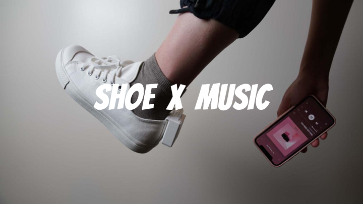

At the end of the lab, upload to your student google drive:
the slicing file from Prusa Slicer (.3mf file format)
the 3D printable file as exported from Prusa Slicer (.gcode file format)
2-3 photos (.jpg or .png) of your 3D printed lamp, at least one photo where both parts are assembled
(1) Rotoscope
(2) Photos
(3) Video
(4) Slides
Use the slide template called 'Final Presentation' in your team's google drive folder. Feel free to change the layout.

(5) Grading
While the weekly milestones will only check if you did something that was appropriate for the weekly work required by each student (i.e., did you do the work or not), the midterm presentation will be graded by the quality of the work you accomplished so far and how much progress you have made towards the overall project goal. We will look at what you set out to do in your technical proposal, and ask ourselves how much of the described work and at what quality you have delivered results so far? The midterm happens when around 2/3rds of the time for the project is already over, so we expect that you either already have a minimum viable product or are very close to it. In addition, we will consider the presentation quality in this grade portion as well.
20% Final Presentation The final presentation is graded similar to the midterm presentation, i.e. we will look at what you set out to do in your technical proposal, and ask ourselves how much of the described work and at what quality you have delivered in your final presentation. In addition, we will consider the presentation quality in this grade portion as well.
Deliverables
At the end of the lab, upload to your student google drive:
the slicing file from Prusa Slicer (.3mf file format)
the 3D printable file as exported from Prusa Slicer (.gcode file format)
2-3 photos (.jpg or .png) of your 3D printed lamp, at least one photo where both parts are assembled